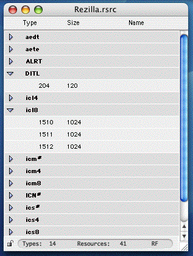

En double-cliquant sur une ressource dans la table, on appelle l'éditeur hexadécimal pour cette ressource. Cela équivaut à selectionner la ressource et choisir la commande Edit dans le Menu Ressource.
En cliquant, avec la touche option enfoncée, sur un ressource dans la table, on appelle la fenêtre de l'Inspecteur pour cette ressource. Cela équivaut à selectionner la ressource et choisir le commande Get Info dans le Menu Ressource. Voir la section fenêtre de l'Inspecteur plus loin.
Noter que cliquer sur un des triangles avec la touche Option enfoncée permet d'agir sur tous les types de ressources à la fois: si le triangle était fermé, tous les types de ressources seront ouverts, et inversement si il était ouvert alors tous les types de ressources seront fermés.
Le bas de la table de ressources comporte des indicateurs affichant nombre de types différents contenus dans cette table et le total nombre de ressources. Les lettres DF ou RF à droite du nombre de ressources indiquent si la table de ressources a été ouverte à partir de la branche de données (DF signifie data fork) ou de la branche de ressources du fichier (RF signifie resource fork).
Le coin inférieur gauche de la fenêtre affiche une petite icone représentant un verrou: si le verrou est fermé, la table de ressources est en mode lecture seule. Dans ce mode, on ne peut exécuter aucune commande d'édition: toutes les commandes de menu relatives aux fonctions d'édition de la table de ressources sont désactivées. On peut cependant visualiser le contenu d'une ressource au moyen de l'éditeur hexadécimal mais il sera en mode lecture seule lui aussi.